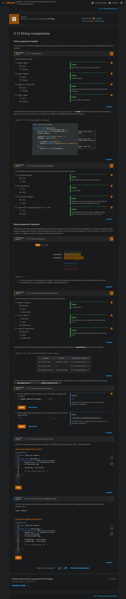
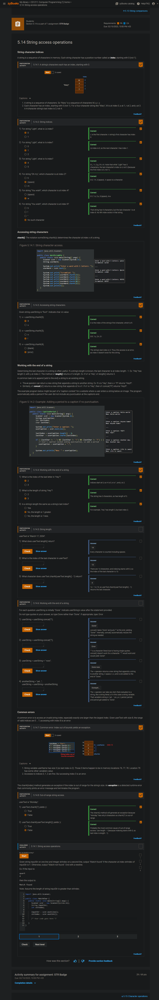
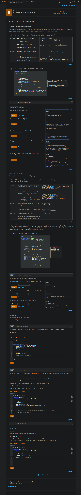

package edu.uqu.cs;
import java.util.Scanner;
/**
* This Java project covers exercises related to String class
* Follow the instructions in the comments
* and complete the implementation.
*/
public class App
{
/**
* The purpose of this app is to manipulate a given string
*/
public static String convertToUpperCase(String str) {
// Declare the variable result
/* string because return type is string */
String result;
// Convert the string str to Upper-Case and store it in the variable result
// Hint: use toUpperCase() function
result = str.toUpperCase();
return result;
}
public static String convertToLowerCase(String str) {
// Declare the variable result
// Convert the string str to Lower-Case and store it in the variable result
// Hint: use toLowerCase() function
return str.toLowerCase();
}
public static int lengthOfString(String str){
// Declare the variable result
// count the length of the string and store it in result
// Hint: use length() function
return str.length();
}
public static int indexOfWord(String str, String word){
// Declare the variable result
// find the given word in the previous string and return its index
// Hint: use indexOf() function
return str.indexOf(word);
}
public static String removeFirstCharOccurrence(String str, char c){
// Declare the variable result
// Search for the first occurrence of charachter c in the string then remove it
// Hint: use substring and indexOf functions
int cIndex = str.indexOf(c);
return str.substring(0, cIndex) + str.substring(cIndex + 1, str.length());
}
public static String replaceString(String str, String w1, String w2){
// Declare the variable result
// replace occurences of word in str
return str.replace(w1, w2);
}
public static int compareStrings(String s1, String s2){
// Declare the variable result
// compare s1 to s2 to find out which one comes first in alphabetical order
// Hint: use compareTo() function
return s1.compareTo(s2);
}
//complete the missing code lines in the main method
public static void main( String[] args )
{
String str = "";
System.out.println( "Welcome to Lab 6" );
Scanner keyboard = new Scanner(System.in);
System.out.println( "Enter a string then press enter:" );
//read a long string from user into str
str = keyboard.nextLine();
//Call method convertToUpperCase(str) and display the output as follows:
//if str is "hello!"
//the displayed output is:
//The string in Upper case: HELLO!
/* 0 means the two are equal */
System.out.printf("The string in Upper case: %s\n", convertToUpperCase(str));
//Call method convertToLowerCase(str) and display the output as follows:
//if str is "hELLo!"
//the displayed output is:
//The string in Lower case: hello!
System.out.printf("The string in Lower case: %s\n", convertToLowerCase(str));
//call method lengthOfString(str) and display how long is str
//if str is "hello!"
//the displayed output is:
//The length of the string is: 6
System.out.printf("The length of the string is: %d\n", lengthOfString(str));
//read a word from the user
//save the input in word1
System.out.println( "Enter a word to search for: " );
String word1 = keyboard.next();
keyboard.nextLine(); // reads the rest of the line and ignores it
//call method indexOfWord(str,word1) and dispaly the index of the first letter in word1
//if it could be found in str
//if str is "Java is FUN!"
//and word1 is FUN
//the displayed output is:
//Index of FUN is 8
//if str is "Java is FUN!"
//and word1 is C++
//the displayed output is:
//Index of C++ is -1
System.out.printf("Index of C++ is %d\n", indexOfWord(str, word1));
//read a new word from user in word2
//replace wrod1 by word2 in string str by calling method replaceString(str, word1, word2)
System.out.println( "Enter another word to replace it with the earlier word :" );
String word2 = keyboard.next();
keyboard.nextLine();
//if str is Java is FUN!
//and word1 is Java while word2 is C
//the displayed output is:
//After replacement: C is FUN!
String replaced = replaceString(str, word1, word2);
System.out.printf("After replacement: is %s\n", replaced);
//read a character from user using method charAt (0) into variable c of type character
//Note: you might use keyboard.next().charAt(0) to read a single character
System.out.println("Enter a letter to remove from the original string: ");
Character c = keyboard.next().charAt(0);
keyboard.nextLine(); // reads the rest of the line and ignores it
//remove the letter from str by calling method removeFirstCharOccurrence(str,c)
String removed = removeFirstCharOccurrence(str, c);
//read two strings from user s1 and s2
System.out.println("Enter the first String: ");
String s1 = keyboard.nextLine();
System.out.println("Enter the second String: ");
String s2 = keyboard.nextLine();
//compare the two strings alphabetically using compareStrings(s1,s2)
//if the return value is less than 0, then display s1 comes before s2
//if the return value is greater than 0, then display s2 comes before s1
//otherwise, display s1 and s2 are equal
//Note: you must display the actual value of s1 and s2
int compareResult = compareStrings(s1, s2);
if (compareResult == 0) {
System.out.printf("%s and %s are equal", s1, s2);
}
else if (compareResult < 0) {
System.out.printf("%s comes before %s", s1, s2);
}
else if (compareResult > 0) {
System.out.printf("%s comes before %s", s2, s1);
}
keyboard.close();
}
}
شرح javatpoint: .charAt() .length() .substring() .replace() .indexOf() .compareTo() .toLowerCase() .toUpperCase()
شرح زيبوكس:   